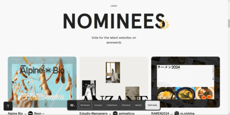
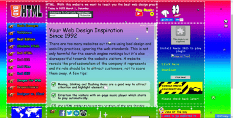

Website Evaluations
Bad HTML
Bad HTML is a website specifically designed to showcase bad web design principles. It provides articles that explain basic web design principles, including HTML, CSS, file management, and SEO.
- Contrast: Coloring is random and some text elements lack sufficent contrast against their backgrounds. There are also many floating particles, that obscure text, with no meaning.
- Repetition: Site uses a custom cursor, however on clickable elements, the cursor switches back to default which is not consistent with custom cursor style. Otherwise, styles are consistent from page to page.
- Alignment: Many elements seem cluttered, detracting from the sites coherence.
- Proximity: Information about completely different topics, ex. weather chart, clock , and jokes, are grouped together, leading to confusion about related content.
Awwwards
Awwwards is a website that recognizes and promotes web design, development, and user experience. It hosts competitions, conferences, and awards for websites.
- Contrast: Effectively uses contrast and various text sizes, to create a visually appealing and cohesive website layout.
- Repetition: Website showcase styles are consistent from section to section. Headings and following text are consistent.
- Alignment: Text is left-aligned under submitted websites and courses, resulting in a cohesive and predictable web layout.
- Proximity: Website sections are properly spaced and related content is grouped together, allowing for text to be clear and understandable.
Bad HTML does not follow the CRAP principles well, resulting in a poorly designed website, hindering the user experience.
Awwards follows the CRAP principles well, creating to a positive user experience and well designed website.